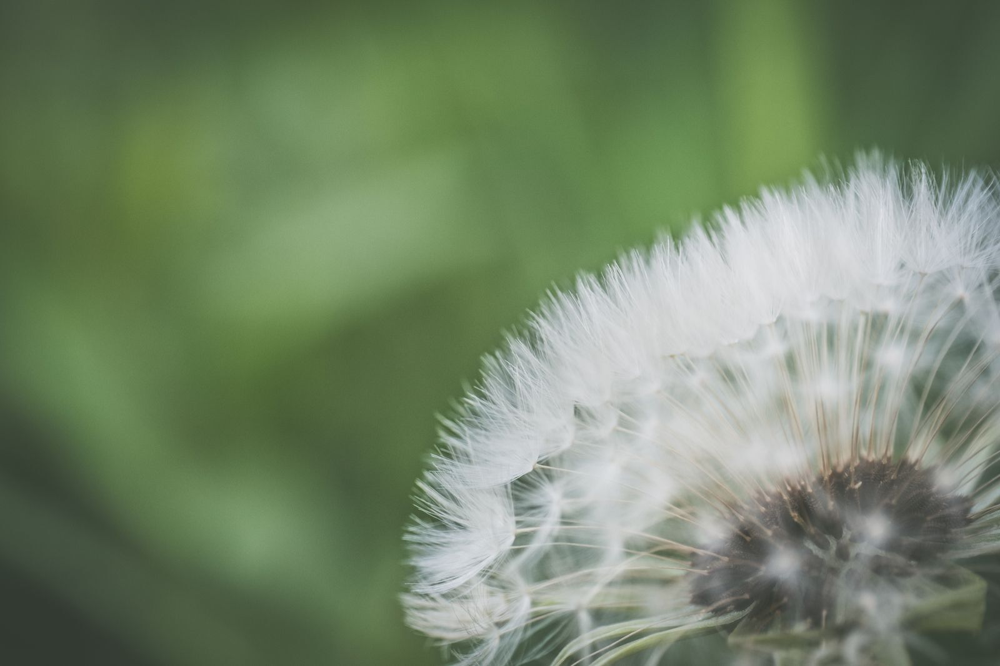
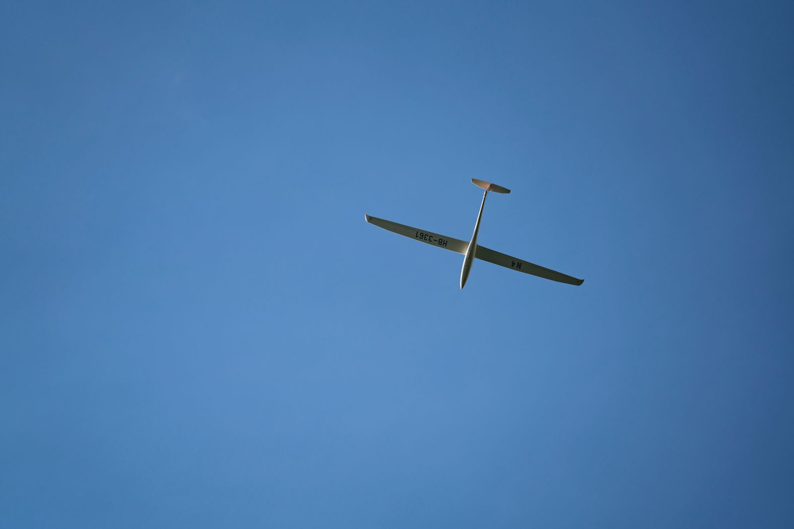

Chapter 3
Nature’s flyers
Seeds, insects, pterosaurs, birds and bats: how flight evolved, and what paper can copy.
Flight is far older than people. Here are its pioneers, in order of arrival.

3.1 Seeds that fly

A plant cannot walk away from home. So its seeds fly.
Winged seeds are among the oldest flyers on Earth. Fossil seeds with three or four wings come from rocks of the Late Devonian, roughly 360 to 385 million years old1,2. Seeds found three tricks, and all three still work today.
Spin. Drop a maple seed and it turns like a tiny helicopter blade. A small whirlwind sits on the front edge of the spinning wing and roughly doubles its lift. The seed falls slowly, and the wind carries it away from the tree3,4.
Parachute. A dandelion seed hangs under a tuft of about 100 fine bristles. The tuft is more than nine-tenths empty space, yet it holds on to the air better than a solid disc. Air leaking through the gaps makes a ring of swirling air that floats just above the tuft, never touching it5.
Glide. Alsomitra macrocarpa, the Javan cucumber, grows a seed with a paper-thin wing about 13 cm across6. It does not spin. It glides, like a small aircraft with no tail. People copied it: see “Copied from nature” later in this chapter.
3.2 The first flying animals
Long before birds, the sky belonged to insects.
Picture a sky with no birds, no bats and no flying reptiles. For about 100 million years estimate, the only animal wings were insect wings.
The oldest widely accepted fossil of a winged insect is about 325 million years old. It is a mayfly-like insect called Delitzschala bitterfeldensis7. A study of insect genes suggests the first wings came even earlier, about 406 million years ago8.
Older fossils are hard to read. A jaw about 400 million years old was once taken as a sign of a winged insect; a 2017 study says it may belong to a centipede-like animal instead9,10. A Devonian fossil described as an insect in 2012 was challenged the next year11,12.
So where did wings come from? Birds and bats turned an arm into a wing. Insects grew something new, and scientists have argued about it for a century13. One idea: wings grew from flat edges of the back. Another: from flaps on the legs, a little like the gills of water insects.
Recent experiments with beetles and with a tiny shrimp-like crustacean point to both at once. The wing may have formed where a piece of the back met a piece of an ancient leg14,15,16. It is the leading idea today, not the final word.
3.3 Griffinflies: the giants

Some insects had wings wider than two sheets of paper laid end to end.
About 300 million years ago, swampy coal forests were home to griffinflies, relatives of today’s dragonflies. Meganeura, found in France, had wings about 70 cm across17,18.
The biggest insect known, Meganeuropsis permiana, lived a little later in what is now Kansas. Sources give its wingspan as 71 to 74 cm17,19.
Why so big? One famous idea is oxygen. Insects breathe through a network of tiny tubes, and the air then may have held up to 35 % oxygen, against 21 % today20. Richer air could reach deeper into a big body. For about 150 million years, the largest insects grew and shrank in step with oxygen21.
Then the pattern broke. After birds appeared, insects stayed smaller even when oxygen rose again, perhaps because something could now catch them in the air21. Other scientists point out that the giants had no flying hunters, or think oxygen mattered most for young insects living in water17,23. Oxygen is probably part of the story, not all of it22.
Today’s dragonflies are smaller, but brilliant flyers. A dragonfly can set the angle and speed of each of its four wings, so it can hover, turn and fly in any direction24.
3.4 Pterosaurs
The first animals with a backbone to fly were not birds, and not dinosaurs.
Pterosaurs were flying reptiles. The Natural History Museum gives about 215 million years ago for the first ones on one page and 228 million on another, so we write “215 to 228”25,26. They lived until 66 million years ago25. Their closest known relatives, the lagerpetids, were small running reptiles that could not fly28.
A pterosaur wing was a thin skin stretched from the arm to the leg. One enormously long finger held its front edge out25.
The biggest, Quetzalcoatlus, keeps changing size. In 1975 its discoverer estimated a wingspan of 15.5 m29. Better bones and better sums brought that down. A 2010 study judged 10 to 11 m and 200 to 250 kg the most reliable upper estimates30. Eleven metres is about 37 sheets of paper end to end estimate.
How did a giant take off? Birds jump with their legs. A 2008 study suggested pterosaurs used all four limbs: they crouched, then vaulted up over their folded wings, like a pole-vaulter31,30. A 2021 study of Quetzalcoatlus agreed that a four-limbed launch was possible, but thought a strong jump from the back legs alone was possible too32. The question is still open.
3.5 Feathers first, flight later

Birds are dinosaurs. And dinosaurs had feathers before any of them flew.
In 1996, scientists in China named Sinosauropteryx, a dinosaur about 1 m long covered in fine, hair-like feathers. It could not fly33. Since then, feathers have turned up on many dinosaurs.
Some were huge. Yutyrannus, a cousin of Tyrannosaurus about 9 m long, wore long, thread-like feathers34,35. Even a plant-eater, Kulindadromeus, had feather-like threads about 168 million years ago36,37. Feathers came first; flight came later.
Archaeopteryx lived about 150 million years ago; the museum gives 149 to 145 million. It was the size of a magpie, with broad feathered wings, but also sharp teeth and a long bony tail. Every skeleton comes from limestone quarries near Solnhofen, Germany38.
Could it fly? The museum says nobody knows whether it flew fully or only glided38. A 2018 study of its wing bones argued that it flapped39, and a 2025 study found special inner wing feathers that suggest it was built for flight40.
Other feathered dinosaurs tried other wings. Microraptor, about 120 million years ago, had long feathers on its arms and its legs: four wings. It could probably glide41,42.
3.6 Bats: hands that fly

A bat’s wing is a hand, with skin between the fingers.
Bats are the only mammals that truly fly. There are more than 1,400 kinds of bat, about one in every five kinds of mammal43,49.
Their wing is a thin skin stretched over the arm and four very long fingers44. The skin is alive with sensors: tiny hairs on it feel the air flowing past45, and hair-thin muscles inside it tune the wing as it flies46.
The oldest bat skeletons found so far are about 52 million years old and come from Wyoming47,48. One early bat, Onychonycteris, could already fly, but its ears suggest it could not yet find its way by echoes. Flight came first49.
Onychonycteris still had claws on all five fingers and short, broad wings. It may have flown by fluttering and gliding in turns49.
3.7 Gliders of the forest
Some animals never flap. They jump, spread out, and fall forwards on purpose.
Gliding has evolved at least six separate times in mammals50. A flying squirrel has a furry skin flap from wrist to ankle51. A usual glide is about 10 m; from a tall tree down a slope it can reach about 80 m52.
The colugo of South-East Asia is a champion. One Sunda colugo was recorded gliding about 145 m, longer than a football pitch53.
The Draco lizard opens skin on long ribs and glides from tree to tree, usually about 8 m at a time54.
Flying snakes have no limbs at all. A paradise tree snake leaps, spreads its ribs to flatten its body, and wriggles through the air55,56. The wriggle is not wasted: it keeps the snake from tumbling57. In tests from a 15 m tower, snakes travelled up to 24 m58.
3.8 Fish and squid that fly
Some of the best gliders live in the sea.
A flying fish races to the surface, spreads its big fins like wings and leaps. Its tail keeps beating in the water as it takes off, like a plane speeding down a runway59.
Once up, it glides low over the waves. Flying close to the water lowers drag, and its fins glide about as well as the wings of some birds60. By linking glides, touching the sea and taking off again, a flying fish can cover about 400 m62.
The longest flight ever timed lasted 45 seconds. A Japanese television crew filmed it from a ferry in 200863.
Squid fly too. In 2013, Japanese scientists described young ocean squid launching from the sea. They shot out a jet of water to take off, spread their fins and arm skin as wings, glided, and dived back in64,65. They reached up to 11.2 m per second, about 40 km/h65 estimate.
3.9 Record holders

The longest trip, the longest non-stop flight, the widest wings.
The Arctic tern spends the northern summer in the Arctic and the southern summer near Antarctica. Tiny trackers showed some terns flying more than 80,000 km in a year, about twice around the Earth66 estimate. Over its life, a tern may fly about 2.4 million km: three trips to the Moon and back68,69.
The bar-tailed godwit never stops. In October 2022 a young godwit, known only by its tag number 234684, flew about 13,560 km from Alaska to Tasmania in 11 days and 1 hour, with no stop for food or rest72. In 2007, a godwit called E7 had flown 11,680 km to New Zealand70.
The wandering albatross has the widest wings of any living bird: about 3.5 m, and 3.63 m for the record bird, measured in 196574. That is about twelve sheets of paper end to end estimate.
It hardly flaps. Near the waves the wind is slower; higher up it is faster. The albatross swoops up into the fast wind, turns and swoops down, gaining speed on every loop. This is dynamic soaring75,76. A lock in its shoulder holds the wings out75. Grey-headed albatrosses have flown right around the world, the fastest in 46 days78.
3.10 How a butterfly flies
A butterfly does not fly like a plane. It claps.
Every autumn, monarch butterflies from Canada and the eastern United States fly south to a few mountain forests in Mexico. Some fly as far as 3,000 miles, about 4,800 km79. The butterflies that make this trip live up to eight months, far longer than their parents80.
How do such delicate wings do it? In a wind tunnel, scientists watched red admiral butterflies through threads of smoke. They used many tricks at once: swirls of air on the front edge of the wing, catching the air they had just stirred, and clapping their wings together81.
The clap matters. On the upstroke the flexible wings cup, trapping a pocket of air, then clap shut and squeeze it out backwards as a jet. Flexible wings made that push 22 % stronger than stiff ones would82. The clap-and-fling trick was first described in a tiny wasp in 197383.
A flapping wing makes lift and also thrust, the push forwards85. A glider only trades height for distance84. Monarchs mix both, and flapping costs them far more: one early estimate says about 28 to 31 times the energy of gliding86. The butterflies in this book only glide; your throw is their only push87.
3.11 Copied from nature

People have been borrowing nature’s wings for more than a hundred years.
Otto Lilienthal watched gulls, herons and storks for years, and even kept young storks in his garden. In 1889 he published a book on bird flight as the basis of flying, before flying his own gliders88. The Wright brothers watched buzzards twist their wing tips to keep their balance, and twisted the wings of their own aircraft to do the same89.
The Javan cucumber seed flew to Austria. In 1897 the German professor Friedrich Ahlborn wrote about it as a model for flying machines. Igo Etrich and Franz Wels built a tailless glider in its shape. Etrich then gave the seed-shaped wing a body and a tail: the Etrich Taube, or “dove”, first tested in April 191090,91.
Engineers still copy seeds. Lockheed Martin named its one-winged spinning drone, Samarai, after maple seeds93. Winged chips the size of a grain of sand spin down like seeds94. Sensors carried like dandelion seeds can drift up to 100 m in a moderate breeze95.
And animals. Bat Bot, a 93 g robot, flies on thin silicone wings like a bat’s96. The DelFly Nimble copies the quick escape turns of fruit flies97. The upturned winglets at the tips of many airliners began with a NASA engineer thinking about the wing tips of soaring birds98.
3.12 Your paper flyers

Three models in this book borrow an idea from this chapter.
The paper maple seed, plate F2, spins as it falls, like the seed in the first section. It is a classic design.
The butterflies, plates B1 to B3, are paper gliders with a monarch’s, a morpho’s and a swallowtail’s wings. They glide; they do not flap. They are concept until a recorded flight test says otherwise87.
The ring glider, plate F1, has no animal twin that we can source. It is here because it shows that a wing does not have to be flat.